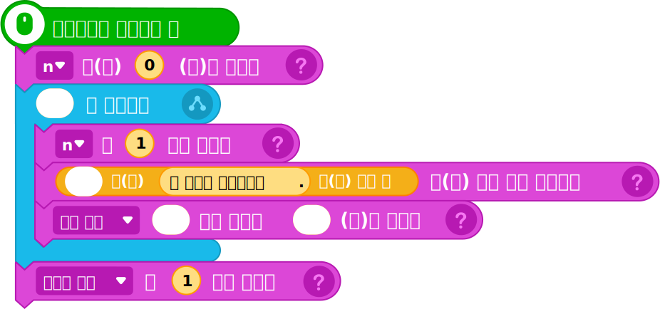

2알고리즘 설계
①‘반티 투표하기’ 단계를 위해 설계한 순서도를 확인해 보자.
순서도

②문제 해결을 위해 오브젝트가 구현해야 할 기능을 생각해보자.
반티![교복을 입은 엔트리봇이 그려진 '[묶음] 반티' 오브젝트](img/object_bant.png)
|
초기화 | 실행 화면과 리스트 초기 설정을 한다. |
|---|---|---|
| 학생 수 입력 | 전체 학생 수를 입력받아 총 인원 변수에 저장한다. | |
| 반티 후보 점수 입력 | 오브젝트를 클릭하였을 때 반티 별로 점수를 입력받는다. | |
| 결과보기 |
모든 사람이 투 표하였을 때 ‘결과보기’ 장면으로 이동한다.
Tip
장면을 추가하고 장면 이름을 ‘결과보기’로 변경한다.
|
|
3프로그래밍
①준비하기
| 오브젝트 |
|
|---|---|
| 변수 |
|
| 리스트 |
|
Tip
반티 리스트를 제외한 나머지 변수와 리스트는 실행 화면에서 보이지 않게 숨긴다.
②프로그램 작성하기
| 오브젝트 | 명령 블록 | |
|---|---|---|
|
반티 총점 초기화 |

|
| 학생 수 입력 및 변수 보이기 |
|
|
| 반티별 합계 점수 구하기 |

|
|
| '결과보기' 장면으로 이동 |
|